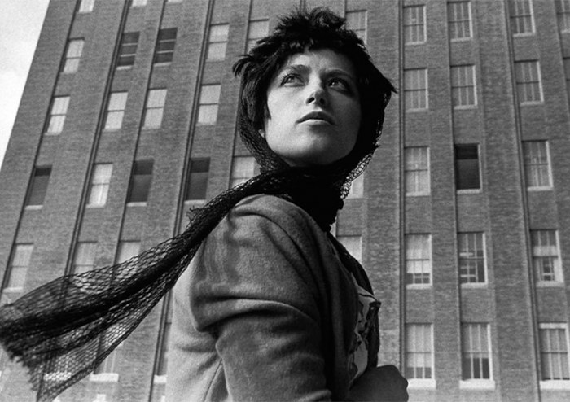

Images, spaces
& the things between.
Multidisciplinary designer
Paris, working worldwide
01
David Mallett
3D film
02
Saint-Martin de Vic
3D exhibition design
03
KHAITE
Newsletter design
04
Fair Warning
Motion design
05
Memories Out of Order
Code and Theory brief
06
Mirrored Realms ↗
Experimental film / Parsons MFA
07
Roblox × Parsons
Digital fashion
08
Ori Living
Motion identity
09
BILT Card
Campaign & motion study
10
Oliver Wyman
Case presentation
Further work
Interfaces, objects and information.
The notebook
Room for the unexpected.
Live sketches, films and small worlds.
Explore the notebook ↗
About
A practice that moves
between disciplines.
I’m Vasiliki, a designer based in Paris. I work across spatial design, moving image, editorial design and creative technology. An architecture background and an MFA from Parsons shape how I move from an idea to an image, an interaction or a place.
MEng / AUTh
MFA / Parsons
Open to permanent roles and
freelance collaborations worldwide.